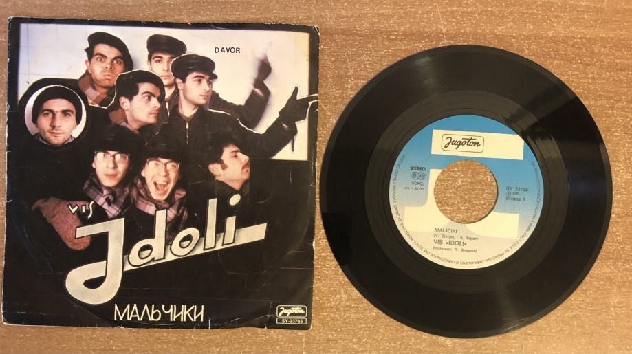
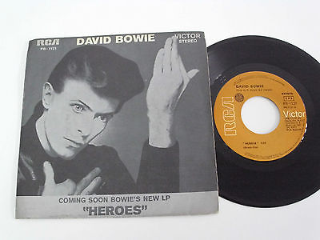

Šta je prvi 45 rpm singl?
RCA Victor je 1949. u SAD uveo 7" singl na 45 rpm. Kao jedan od prvih i kataloški prvi 45 rpm izdanja često se navodi Eddy Arnold — “Texarkana Baby” (48‑0001), objavljen 1949.
Dimenzije i mesto pojavljivanja
- Prečnik: 7" (≈17,5 cm; postoje i 12" singlovi).
- Brzina: 45 rpm (ponekad 33 1/3 za duže EP‑e).
- Mesto/period: lansirano u SAD 1949, brzo prihvaćeno širom sveta.
Single play ploče pojavile su se krajem 1940-ih, kao reakcija na pojavu LP formata. Nakon što je Columbia Records 1948. predstavila dugosvirajuću ploču (LP) od 12 inča na 33 1/3 rpm, konkurentska kuća RCA Victor je 1949. lansirala singl ploču prečnika 7 inča, koja se vrtela na 45 rpm. Ideja je bila da se tržištu ponudi nosač zvuka namenjen pojedinačnim pesmama, kraći i jeftiniji od LP-a, ali sa dovoljno kvalitetnim zvukom da zadovolji potrebe tadašnje popularne muzike. Trajanje: obično 3–5 minuta po strani, u skladu sa dužinom popularnih pesama. Struktura: A-strana — glavna numera, predviđena kao hit. B-strana — sporedna pesma, demo, live verzija ili eksperiment. Singl ploče su se prodavale u papirnim kovertama ili omotima, a kasnije i sa ilustracijama koje su postale važan deo pop kulture. Kulturni značaj i uloga u industriji Tokom 1950-ih i 1960-ih singl ploča je postala ključni format za popularnu muziku. Ona je omogućila: da se nove pesme brzo plasiraju na tržište, da radio stanice lako puštaju aktuelne hitove, da mladi kupuju muziku po nižoj ceni od albuma. Top-liste (npr. Billboard Hot 100) bazirale su se upravo na uspehu singlova. Mnogi muzičari su postajali svetske zvezde zahvaljujući jednom ili dva snažna singla, dok su LP-jevi do kasnih 1960-ih uglavnom imali sporednu ulogu. B-strane su često skrivale dragulje: neke pesme koje su prvobitno bile objavljene kao sporedne postale su veliki hitovi, a izvođači su ih koristili i za kreativna istraživanja. Žanrovski razvoj 1950-e: singl je bio okosnica rokenrola (Elvis Presley, Chuck Berry, Little Richard). 1960-e: “britanska invazija” (The Beatles, The Rolling Stones) širila se upravo preko singlova. 1970-e: disco, soul i funk kultura oslanjala se na singl izdanja; pojavljuju se i 12-inčni singlovi za DJ-eve, sa produženim verzijama pesama. 1980-e: punk i novi talas često su svoje ideje širili kroz singlove; pop zvezde poput Michaela Jacksona ili Madonne gradile su popularnost na seriji hit singlova. Hip-hop i elektronika: singl ploče (posebno 12") postale su nezamenljive u DJ praksi. Pad popularnosti Od kraja 1980-ih pa tokom 1990-ih, singl ploče gube primat zbog kaseta i CD-ova. Muzička industrija počela je da izbacuje “CD singlove” ili “maxi singlove”, a vinil je ostao prisutan uglavnom u DJ i underground scenama. Mnoge fabrike prestale su sa štampanjem 7-inčnih ploča, a singl je izgubio status glavnog promotivnog formata. Povratak u 21. veku Sa renesansom vinila u 2000-im i 2010-im godinama, singl ploče su ponovo postale tražene. Izvođači ih objavljuju u limitiranim tiražima, često povodom posebnih događaja ili Record Store Day festivala. Danas singl ploča ima dvostruku ulogu: kolekcionarski predmet — zbog raritetnih izdanja, unikatnih omota i nostalgije, promotivno sredstvo — izvođači objavljuju vinilne singlove kako bi stvorili dodatnu vrednost u eri digitalnog striminga. Značaj singl ploča Singl je oblikovao način na koji ljudi slušaju muziku. Dok je LP bio prostor za albume i konceptualne celine, singl je služio za trenutni hit, pesmu koja se pamti i oko koje se gradi popularnost izvođača. Njegova kratkoća i pristupačnost oblikovale su strukturu popularne pesme od tri do četiri minuta — standard koji je opstao do danas.
Katalog — SP
| # | Omot | Izvođač | Naslov | Godina | Label | Katalog br. | Format | Brzina | Prečnik | Država | Stanje | Cena | Napomena |
|---|---|---|---|---|---|---|---|---|---|---|---|---|---|
| 1 |  |
Idoli | Maljčiki / Retko te viđam sa devojkama | 1981 | Jugoton | SY-12345 | 7" SP | 45 | 7" | YU | VG | — | New wave klasik |
| 2 |  |
David Bowie | Heroes | 1977 | RCA | PB 1121 | 7" SP | 45 | 7" | UK | VG+ | — | Picture sleeve |
Podelite stranicu
Deljenje sadržaja na Facebook-u:
Ako se dugme ne prikazuje, otvorite link: Podeli na Facebook-u